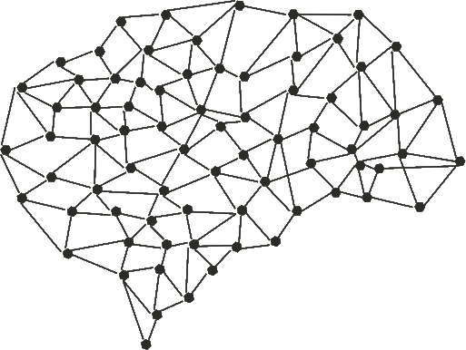
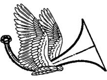
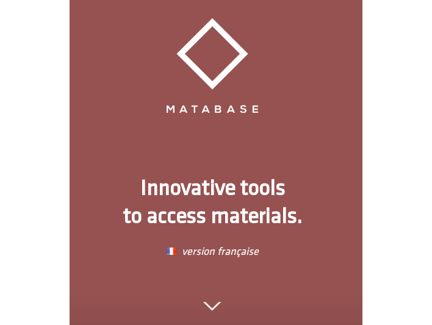
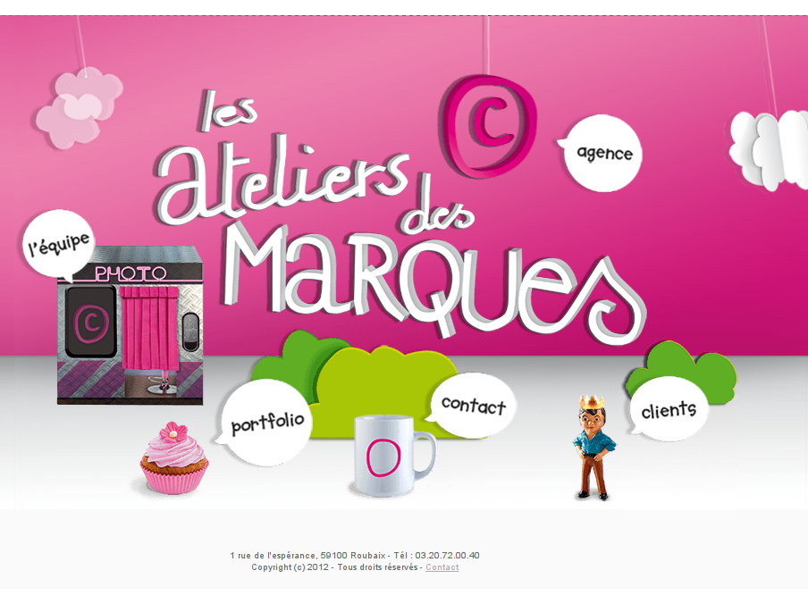

Smart-grids brain project

Travail de recherche autour des smart-grids
Évasion antillaise

Vitrine pour chambre de charme
Festival échos

Depuis 2013, chaque année une refonte du site est effectuée en vue de l'édition annuelle du festival
Matabase

Teaser du projet de start-up Matabase, base de donnée en ligne de matériaux
Ateliers des marques

Toute première réalisation en 2012, pour la société Les Ateliers des Marques